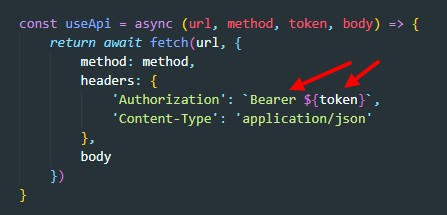

Очень часто нам нужно будет в маршрутах добавлять промежуточные этапы. Один из примеров такой необходимости - это проверять авторизован ли пользователь. Т.е. перед тем как выполнить контроллер, мы должны проверить заголовок Authorization на наличие JWT
Вот как будет выглядить такой Middleware:
Middleware принимает три аргумента: request, response и функцию Next. По факту туче - это наш контроллер, который бдет вызван при определенных условиях.
С 5 по 7 строчку мы проверяем тип метода. Дело в том, что REST API работает таким образом, что он может посылать запросы с типом OPTIONS для того что бы просто проверить доступен ли API. Поэтому в этом случае мы ничего не проверяем.
Этот Middleware мы затем передаем нашему роуту вторым аргументом
Теперь что бы наш маршрут отрабатывал корректно, мы должны в HTTP запросе в заголовок Authorization добавлять строчку Bearer JWT (между Bearer и JWT обязательно пробел)
